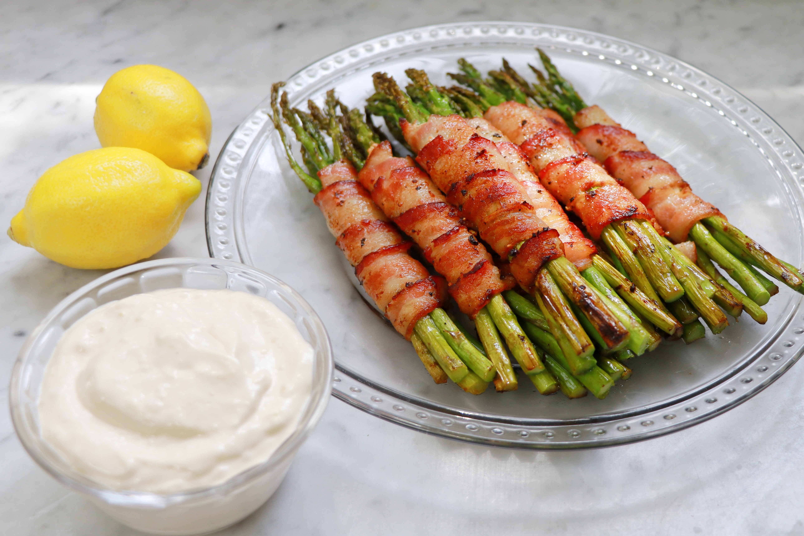

Bacon-Wrapped Asparagus with Lemon Aioli

Description
This simple recipe is easy, delicious, and satisfying.
Lemon Aioli:
- ¾ cup mayonnaise
- 1 teaspoon Dijon mustard
- 1 clove garlic, minced
- 1 teaspoon lemon zest
- 1 tablespoon fresh lemon juice
- ¼ teaspoon garlic salt
Asparagus Bundles:
- 1 bunch fresh asparagus, trimmed
- 10 slices bacon
- olive oil cooking spray
- 1 pinch cracked black pepper
Steps
- Combine mayonnaise, Dijon mustard, garlic, lemon zest, lemon juice, and garlic salt in a bowl and mix well.
Refrigerate lemon aioli until ready to use.
- Preheat an outdoor grill for medium heat and lightly oil the grate.
- Divide asparagus stalks into groups of 3 to 5 stalks, depending on the thickness of the asparagus. Wrap each
asparagus bundle tightly with 1 piece of bacon, overlapping slightly as you wrap and tucking the ends under
the bacon so it holds securely.
- Place asparagus bundles in a single layer on a piece of aluminum foil. Spray bundles lightly with olive oil
spray and top the bacon with cracked pepper.
- Grill asparagus bundles on the foil for 10 minutes. Flip each bundle and grill until bacon is cooked through
and crisp, an additional 10 minutes. Serve with lemon aioli.